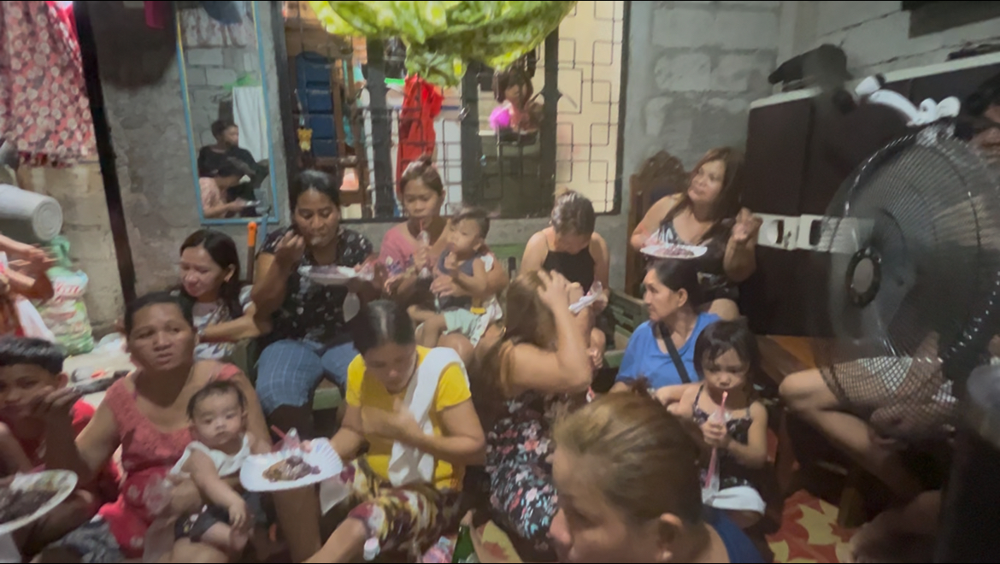

What We Do
By God’s grace, EYIMF serves communities through Gospel-centered discipleship and practical compassion. Below are our core ministry areas and some stories you can explore and share.

Children's Church
Teaching God's Word in the simplest form for children.

Stories from the Field
Food Packs in Nueva Ecija
Families received food packs along with prayer and Scripture. Local leaders coordinated distribution and follow-up visits.
Youth Discipleship Weekend
Young believers trained in Scripture memorization, evangelism, and joyful service.
Children’s Church
On my very first trip to the Philippines, my only intention was to meet the incredible woman I had been talking to for over three years. We began our conversations shortly after COVID began, when her country’s borders were closed to the world. By the time they opened, it took some time before I could travel. My plan was simple: to see if she was truly as amazing as I believed her to be—and she turned out to be a thousand times more amazing—and then begin the process of bringing her to the United States to marry.
I should say here that the only thing I hate more than hot weather is hot humid weather. I love the four seasons of Ohio and couldn’t imagine living in a country with only two: hot and rainy, and hot and dry. But everything changed once I arrived. I fell in love with the Filipino people—their strength, their joy, and their resilience. I had spent many years in youth ministry in the U.S., founding and preaching in youth camps and services, but the children in the neighborhood were unlike any I had ever encountered.
They seemed to love me instantly. Whenever I returned from town, I could hear them shouting as I walked back into the barangay. To be fair, the only word I really understood was “Santa,” which is what they called me—no doubt Myrna’s influence. Dave, the amazing young man who would soon become my son, explained what they were saying. It touched my heart so deeply.

There is no such thing as privacy in our Filipino home. I would be sitting at the kitchen table, reading, and hear a tiny voice say, “Hi Santa.” Looking up, I’d see two to six children peering in through the window, smiling. I’d wave and try to talk with them. Most of the little ones didn’t speak English yet, so conversations were short—but their joy was loud and clear.
When I returned to the States, I couldn’t get those precious souls off my mind. I prayed and wept for them, their faces vivid in my memory. By the time I returned the next year, I knew I was called to minister to that wonderful community. I shared my vision with Myrna, Dave, and Del, and their excitement was contagious. Myrna went to the market and bought snacks for the kids, while Dave and Del went through the neighborhood announcing that we’d be starting a children’s church in our small living room.
That first night, twelve children showed up. I read them Bible stories from books I’d brought for that purpose, and we sang the old Sunday School songs—“Jesus Loves Me,” “Father Abraham,” “Zacchaeus Was a Wee Little Man,” and more. It was simple, beautiful, and unforgettable.
Before long, our little living room was packed with thirty-six children every night. Fifteen minutes before start time, the sound of squealing kids would grow louder outside our door. When Dave or Del finally told them they could come in, it was like a joyful flood poured into our home.

What began with a few curious faces at the window became the beating heart of our mission in the Philippines. And this is just the beginning of what God has planned as we follow His will for this ministry.
“But Jesus said, Suffer little children, and forbid them not, to come unto me: for of such is the kingdom of heaven.” — Matthew 19:14 (KJV)
Home Church Services
On my third trip to the Philippines, we began holding home church services every Sunday. I remember wondering if anyone would come. As the hour approached, I heard the sound of our neighbors walking toward our home— a moment of quiet joy and gratitude. The heat was intense—well into the 90s—and our house, with its metal roof and no insulation, felt like an oven. Yet it didn’t stop them. Mostly mothers came, a beautiful passel of little ones alongside them, eager to hear the Word.

I quickly saw the need for more Bibles, but their attentiveness was unmistakable. I taught for about 35 minutes as my son Dave translated. I wasn’t used to pausing, so I’d sometimes forget—he was patient, smiling as he caught me up each time. At the close of that first service, my precious wife had prepared a simple meal for everyone who came. Her quiet strength and loving service continue to bless our ministry.
When the next Sunday arrived, doubts crept in—would they return? But just like before, I heard footsteps, and one by one they came. Services continued faithfully until I returned to the United States due to my mother’s medical emergency. Even now, as I prepare to return, the vision has grown: to train ministers to plant house churches in every barangay. Each barangay functions like its own village—self-governed and close-knit—so small house churches fit the rhythm and relationships of the community.
“And daily in the temple, and in every house, they ceased not to teach and preach Jesus Christ.” — Acts 5:42 (KJV)
Feeding Our Community
One of the first things I learned living in the Philippines is how deeply the people of our barangay care for one another. When someone is in need, it isn’t just a family matter — it’s a community matter. This spirit of togetherness inspired our “Feeding Our Community” outreach. It’s not a handout. It’s a shared table, where neighbors bless neighbors.

On warm evenings, families and friends come together, sharing food, smiles, and stories. We prepare simple, nourishing meals, not as a gesture of pity but of love and fellowship. It’s about looking someone in the eye and saying, “We’re in this together.”

What began as a small gathering quickly became something the whole barangay looks forward to. Laughter echoes in the air, children play, and the aroma of food reminds us that the simplest acts of kindness often carry the greatest weight.

As the outreach grew, so did the joy of the people. It wasn’t about who had more or who had less—it was about everyone bringing something to the table, whether it was food, time, music, or just a smile.
This is what community looks like — not donors and recipients, but friends and family coming together, each with something to give. In these moments, you can feel the love of God at work in a way that words can barely describe.
Youth Outreach
What began with the little children of our community sparked a vision that we are praying will become a powerful force for the Kingdom of God—a movement that will echo across the Philippine Islands, bringing countless young people to the saving knowledge of Jesus Christ.

Our next step in this growing mission is to launch a dedicated outreach for youth and young adults. These years are full of energy, searching, and difficult choices—and we believe that God’s Word has the power to give direction and purpose in this critical season of life.

David has a unique heart for this age group. In the early 1990s, he helped found a youth camp in the United States that is still transforming lives to this day. His passion is to equip young believers to face real-world struggles through Biblical truth and to raise up future leaders who will carry the Gospel far beyond their hometowns.

The vision is simple but powerful: a space where youth can enjoy fun activities, good food, and meaningful friendships—while receiving Biblical teaching that addresses their unique needs. As the network of house churches grows, we hope to bring different fellowships together for joint youth sessions and worship nights.
Our prayer is that out of these young lives will rise pastors, teachers, evangelists, singers, and musicians who will stand boldly for Christ and carry this work forward until His return.

Clothing Those in Need
We have a great vision for the mission God has called us to. By His grace, we are already feeding the community, discipling all age groups, and seeing lives changed through the Gospel. For these blessings, we are deeply grateful to the people of God who faithfully make these missions possible month after month.
Our clothing outreach will require prayer, planning, and the faithful labor of helping hands. We are praying for a coordinator in the United States who can help organize the collection of clothing and arrange shipping to the Philippines. Once the clothing arrives, it will be transported to a storage area, where it will be sorted and prepared for distribution to those who need it most.

Another goal is to bring joy to children during the Christmas season by collecting and shipping toys in advance. To make this vision a reality, we will need an increase in funding and the generous support of individuals who share our heart for this mission. Please join us in prayer that God will move on the hearts of those He is calling to help bring warmth, dignity, and joy to families in need.
Photo Highlights


Partner with EYIMF
- Pray: for open doors, faithful workers, and lasting fruit.
- Serve: join local outreaches or help with resources and logistics.
- Share: tell these stories and invite others to pray and help.
Questions? Email us at info@eyimf.org.